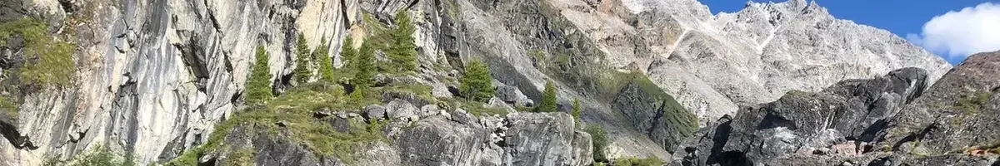
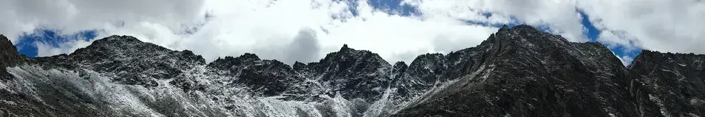
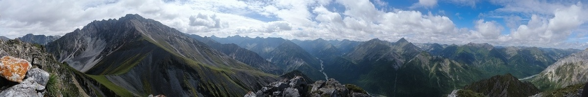
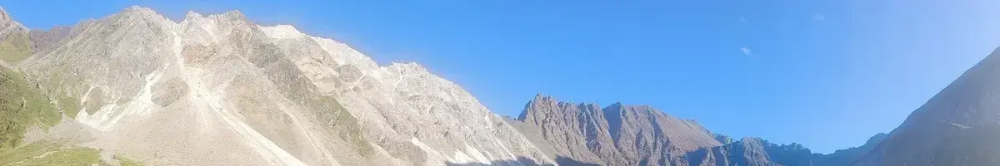

Главная
Направления
Классификация
Снаряжение
Галерея
Аккаунт
Современные классификации пешеходного туризма
От самых элементрных до исключительно экзотических
Разновидности
Пеший
На своих ногах.
Горный
В скалолазном снаряжении.
Лыжный
На лыжах. И не обязательно зимой.
Водный
На байдарках или катамаранах.
Спелео
В пещерах.
Конный
На конях.

Цели
Треккинг
Туристическое путешествие пешком в местах, где отсутствуют современные виды транспорта, с целью осмотра природных и культурных достопримечательностей. Иначе говоря, это самодеятельный пеший поход в горах самоцелью которого не является преодоление естественных препятствий.
Прогулка
Передвижение на местности с познавательной, оздоровительной целью, закаливание организма. В зависимости от времени года и подготовленность человека, прогулки могут быть пешие, лыжные, велосипедные, лодочные. Это самая простая и доступная кратковременная форма туризма.
Экскурсия
Коллективное посещение определённых объектов с познавательной или научной целью. Экскурсии также преследуют цель расширения кругозора, общего культурного развития человека.
Экспедиция
Организованное многодневное в малоисследованный район, которое осуществляется со специальными исследовательскими целями.
Поход
Путешествие с активным способом передвижения в отдалённых от места жительства районах, осуществляемое с образовательной, оздоровительной, спортивной, исследовательской целью. Это групповое или индивидуальное мероприятие, связанное с перемещением по некому маршруту в рекреационных целях.

Форма проведения
Плановый
При плановым туризме участники похода двигаются по заранее намеченному маршруту, который включает в себя гостиницы или турбазы, где им предоставляют ночлег, питание, экскурсионное обслуживание.
Cамодеятельный
В самодеятельном туризме путешествие строится целиком или частично на самообслуживании. Туристы сами намечают маршрут и способ передвижения, обеспечивают себе питание, ночлег и места отдыха, намечают объекты для осмотра. Им самим приходиться оборудовать лагерные стоянки, собирать топливо для костров, готовить еду и преодолевать препятствия в пути.

Сложность
Некатегориальные
Походы выходного дня – один или два дня.
1-3 степени в детско-юношеском туризме
Походы длятся от 3 до 8 дней с протяженностью до 75 километров.
1-6 степени во взрослом туризме
Сложные, требующие подготовки и дополнительного снаряжения походы.
